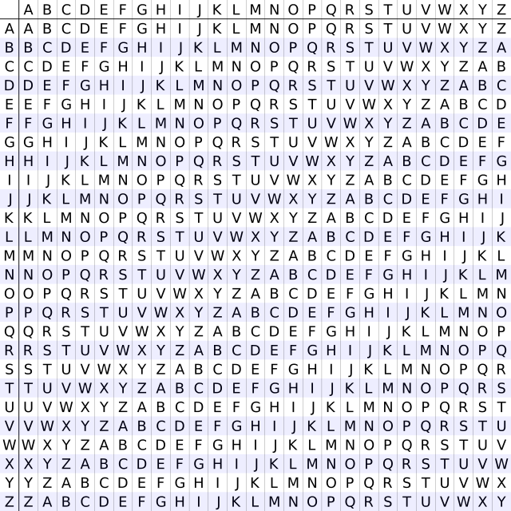

We’re going to take a look at “la cifra de,” a challenge from 2019 picoCTF involving some very interesting language. Our first clue of what this could be is the title- “the cipher of” in Italian. The description is:
I found this cipher in an old book. Can you figure out what it says? Connect with nc jupiter.challenges.picoctf.org 5726.
We can navigate to our terminal and type in the command. We’re greeted with an encrypted message:
There’s a couple of things to notice here. First, it is formatted almost exactly like normal text, with paragraphs and punctuation, but with random letters. In addition, the middle part looks suspiciously like a flag - hgqqpohzCZK{m311a50_0x_a1rn3x3_h1ah3x6kp60egf}. Since this is from picoCTF, we can almost guarantee that the three capital letters are CTF. There’s also a couple of numbers, which also contribute to the fact that this is from an “old book”. It says 1553, 1467, 1508, etc.
Since the word spacings are all there, this code is probably a substitution cipher, where each letter is replaced by a different letter. The most famous of these is the Caesar cipher, where we shift each letter by a certain number of letters.
Let’s try it then! If we input the text into a Caesar cipher solver, we’ll find that it produces no results. Darn :( We can also see that because CZK corresponds to CTF, there’s no fixed shift.
From here, we can try some other substitution ciphers - the other famous one is Vigenère cipher, a polyalphabetic cipher, meaning that the “shift” between the ciphertext and the plaintext changes.
In fact, if we search up the couple of year dates we can see, the first result is the Vigenère cipher :o
Let’s crack the cipher then! Unfortunately, the Vigenère cipher is not as easy to crack as the Caesar cipher- it involves using a key, and each letter of the key repeated over and over again is “added” to the plaintext.

We need to first determine the length of the key, or somehow guess the key altogether. Unlike the Caesar cipher, with only 26 different possible shifts, there are infinite possibilities for Vigenère cipher keys. Let’s go to this website: https://www.boxentriq.com/code-breaking/vigenere-cipher
If we choose autosolve, we get guesses that look like this:
None of these perfectly decrypt the text. However, do you see a pattern? It seems that the computer thinks that the key should be something like “flag”, or using those letters. Let’s try using “flag” as the key! After decrypting, lo and behold, we get the following text:
It is interesting how in history people often receive credit for things they did not create
During the course of history, the Vigenère Cipher has been reinvented many times
It was falsely attributed to Blaise de Vigenère as it was originally described in 1553 by Giovan Battista Bellaso in his book La cifra del. Sig. Giovan Battista Bellaso
For the implementation of this cipher a table is formed by sliding the lower half of an ordinary alphabet for an apparently random number of places with respect to the upper halfpicoCTF{b311a50_0r_v1gn3r3_c1ph3r6fe60eaa}
The first well-documented description of a polyalphabetic cipher however, was made around 1467 by Leon Battista Alberti.
The Vigenère Cipher is therefore sometimes called the Alberti Disc or Alberti Cipher.
In 1508, Johannes Trithemius invented the so-called tabula recta (a matrix of shifted alphabets) that would later be a critical component of the Vigenère Cipher.
Bellaso’s second booklet appeared in 1555 as a continuation of the first. The lower halves of the alphabets are now shifted regularly, but the alphabets and the index letters are mixed by means of a mnemonic key phrase, which can be different with each correspondent.
The flag is therefore picoCTF{b311a50_0r_v1gn3r3_c1ph3r6fe60eaa}. We now know what the name of this challenge means from this text - the name of the “old book”! :)